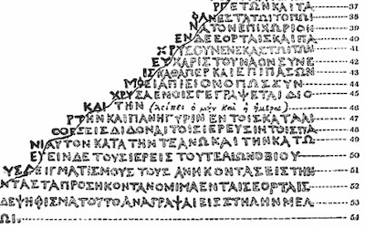
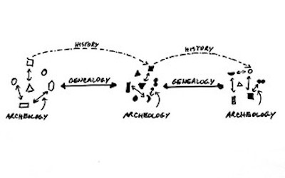
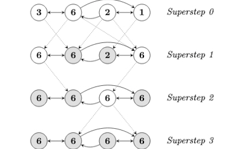
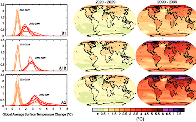

My academic publications range from case studies of specific applications of machine learning and big data to papers exploring new methodologies for media studies to theoretical arguments about how we can better conceptualize prediction, potentiality, and difference in a computational milieu. My writing has appeared in academic journals like Computational Culture, The International Journal of Communication, and Cultural Studies ↔ Critical Methodologies, as well as a number of edited collections. Below you will find overviews of some of my recent and forthcoming publications as well as links to any that are available online or in print.
My earlier work was largely focused on Google’s Knowledge Graph, Pregel, the graph database that powers it, and some of the web crawlers and machine learning tools that Google has used to automatically extract semantic data from the web. I show how these practices instate an Aristotelian conception of categorizing difference and explain their limitations for actually generating new conceptual knowledge. This work was coupled with explorations of a methodology I've described as 'media genealogy' that looks to politicize media studies by uncovering the historical contestations of power that have led to the stabilization of media and communications technologies. This latter work is currently under development as a co-authored book project that was workshopped at the University of Toronto in summer 2019 and is undergoing final revisions.
My more recent academic work has focused on analyzing computer vision algorithms, the machine learning tools that they are built with, and the visual datasets that they are trained on. In my book project I examine this conjuncture from the perspective of heteronormative bias. In a recent chapter for an edited collection I have focused explicitly on Google’s Cloud Vision API, Google Photos, ImageNet, and WordNet to show how they foundationally incorporate racial bias. This work is also in conversation with recent research I've done on the history of eye tracking technologies and the attention economy.
Race and Computer Vision
This chapter for Andreas Sudmann’s forthcoming edited collection The Democratization of AI examines racial bias in image recognition algorithms. I argue that typical machine learning approaches render phenotypic racial traits either hypervisible or invisible, in large part due to biased visual datasets that serve as the foundation for computer vision applications.
Captured Time: Eye Tracking and the Attention Economy
This chapter for Axel Volmar and Kyle Stein’s forthcoming edited collection Hardwired Temporalities examines how eye tracking technologies became historically tethered to modeling human attention. As eye tracking becomes increasingly ubiquitous, I argue we will see an acceleration of the attention economy, for example: ads that stop playing when you look away from them.

Towards a Speculative Code Studies
This article argues for a methodology to rigorously speculate about the blackboxed code of digital platforms. I argue that the fetishization of transparent access to source code prevents us from critiquing code that impacts our everyday lives. By analyzing developer tools and free and open source software (FOSS) in combination with archival study, scholars can make strong arguments about the contents of black boxes.
From Aristotle to Computational Topoi
This chapter for Scott Sundvall’s edited collection Rhetorical Speculations examines how Aristotle’s conception of topoi overlaps with current machine learning applications. I argue that the unstructured learning of web semantics can be understood as computers autonomously engaging in Aristotelian dialectical knowledge production, most notably by sifting through candidate propositions for those that might be accepted as doxa.

Media Genealogy and the Politics of Archaeology
This article, co-authored with Jeremy Packer for The International Journal of Communication, outlines our approach to the media genealogical method and draws on Michel Foucault’s turn from archaeology to genealogy. We examine the limitations of the media archaeological method found in Anglophone discourses surrounding the work of Friedrich Kittler, Wolfgang Ernst, and Siegfried Zielinski.

The Graphing of Difference: Numerical Mediation and the Case of Google’s Knowledge Graph
This article offers a critical examination of contemporary graph databases, such as Google’s Knowledge Graph, from the perspective of media theory, philosophy of difference, and epistemology. Drawing on the work of Gilles Deleuze, I argue that the ontology and schema of semantic graph data will prevent it from ever capturing difference in itself.
Graph Force: Rhetorical Machines and the n-arization of Knowledge
This paper argues that the machine learning algorithms behind Google's Knowledge Graph constitute a machinic rhetoric, by which increasingly autonomous machines are capable of producing their own discursive knowledge-formations. They lead to what I term the n-arization of thought, which delimits the space of invention and knowledge-production to that which can be made to fit the pattern of this data structure.
An Archive for the Future: Paul N. Edwards on Technology, Historiography, Self and World
In this interview Paul N. Edwards addresses concerns related to the history and critical analysis of media and technology, including: archival methodology and interdisciplinarity in media studies, theories of technological momentum and infrastructural innovation, the political stakes of historiographic inquiry in terms of media and technology, and the importance of the work of Michel Foucault.

Beyond the Possible
In this article-length review essay co-authored with Matthew May, we respond to Speculate This!, a critical analysis of big data and predictive analytics that operates as a manifesto and a call to envision a new future. We draw on Gilles Deleuze to argue that the authors’ concept of possibility and potentiality are too limited to critique, resist, and escape capitalist forms of speculation.